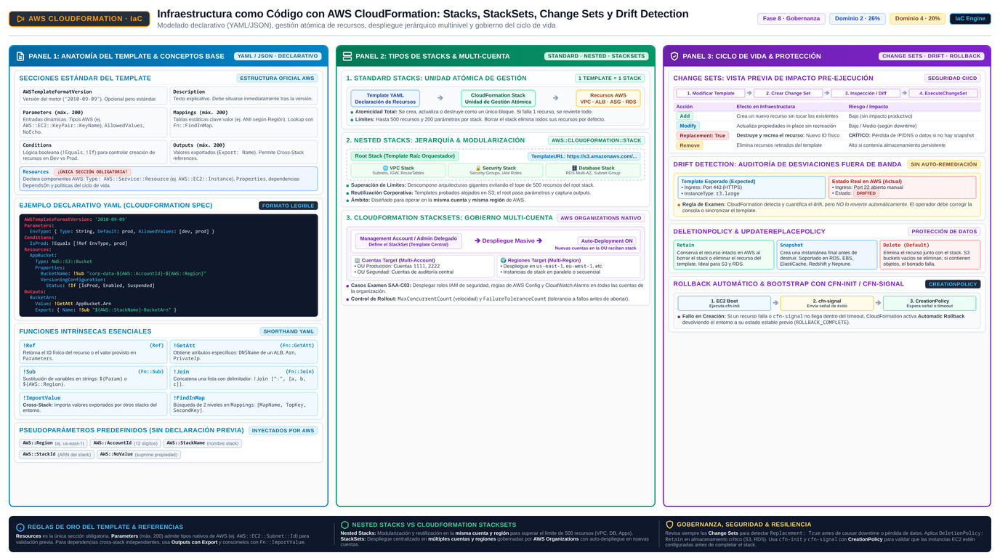

CloudFormation y Systems Manager AWS CloudFormation and AWS Systems Manager
Infraestructura como texto y operaciones sin SSH: el dúo que convierte "entornos reproducibles, cambios auditables y parcheo a escala" en la respuesta por defecto del Dominio 2.
Provisionar a mano en la consola es cocinar sin receta: sale, pero nadie puede repetir el plato, nadie sabe qué tocaste la última vez y apagar la cocina entera implica recordar cada utensilio. AWS CloudFormation es la receta: un template (YAML o JSON) que declara todos los recursos que quieres, y un motor que los crea, los configura y resuelve sus dependencias en el orden correcto. La receta se versiona en Git, se diferencia con un diff y se reutiliza para servir el mismo plato en otra Región u otra cuenta. AWS Systems Manager (SSM) es el equipo de mantenimiento de la cadena entera: opera cientos de instancias a la vez —comandos, parches, sesiones— sin abrir una sola puerta exterior, es decir, sin SSH, sin bastion hosts y sin claves que rotar.
El examen premia esta pareja con dos palabras mágicas que aparecen una y otra vez en las opciones correctas: repeatable y least operational overhead. CloudFormation responde a la primera (el mismo template despliega el mismo resultado, siempre) y SSM a la segunda (una flota gestionada desde un punto central, con sesiones auditadas). Entre ambos cubren el ciclo completo de vida de la infraestructura: nacer de un template, cambiar con change sets, vigilarse contra el drift y operarse a escala. Esta página recorre ese ciclo en orden.

Fn::ImportValue para cross-stack references. Uso de funciones intrínsecas (Ref, Fn::GetAtt, Fn::Sub) y pseudoparámetros (AWS::Region, AWS::AccountId). Panel 2 (Topologías de Despliegue: Stacks, Nested Stacks y StackSets): Despliegue atómico de recursos en Standard Stacks; desacoplamiento y reutilización mediante Nested Stacks (ej. VPC compartida o capas de backend) con el recurso AWS::CloudFormation::Stack; y aprovisionamiento simultáneo multi-cuenta y multi-región mediante CloudFormation StackSets gobernado centralmente por AWS Organizations. Panel 3 (Gobernanza, Ciclo de Vida y Resiliencia): Control preventivo con Change Sets (vista previa antes de mutar recursos), detección de modificaciones manuales no autorizadas con Drift Detection, protección de datos críticos ante borrado de stack con DeletionPolicy: Retain, y confirmación de arranque de instancias EC2 con cfn-init, cfn-signal y CreationPolicy.Templates y stacks: gestionar cien recursos como uno
Un template describe todos los recursos que quieres —instancias EC2, un RDS DB instance, un Auto Scaling group, un load balancer— y sus propiedades, de forma declarativa: tú dices el estado final y CloudFormation decide el orden y la configuración, incluyendo las dependencias entre recursos. Al desplegarlo creas un stack, que es la unidad de gestión: todos los recursos del template se provisionan como un grupo, se actualizan como un grupo y — esto es oro de examen — se eliminan como un grupo, porque borrar el stack borra todos sus recursos. El escenario oficial del User Guide lo resume en una app web escalable: en lugar de crear y cablear a mano el Auto Scaling group, el balanceador y la base de datos, describes los tres una vez y el stack los levanta conectados.
La segunda mitad del argumento es la replicación. Si la aplicación necesita estar en tres Regiones, no re-provisionas a mano tres veces: reutilizas el mismo template y CloudFormation produce los mismos recursos, consistentes y repetibles, en cada Región. Y como el template es texto, el control de cambios se resuelve con un sistema de versiones: los diffs del template son los diffs de tu infraestructura, sabes quién cambió qué y cuándo, y para revertir usas la versión anterior del template en lugar de memoria y valentía. Esa tríada — gestión como unidad, replicación, control de cambios — es exactamente lo que el enunciado describe cuando la respuesta correcta es "define the infrastructure in a CloudFormation template".
recursos y propiedades"] ST["Stack
unidad de despliegue"] T --> ST subgraph S["Recursos gestionados como grupo"] ASG["Auto Scaling group"] ELB["Balanceador"] RDS["Base de datos RDS"] end ST --> ASG ST --> ELB ST --> RDS OUT["Outputs
valores reutilizables"] RDS --> OUT classDef navy fill:#EFF6FF,stroke:#3B82F6,stroke-width:2px,color:#1E293B classDef green fill:#F0FDF4,stroke:#10B981,stroke-width:2px,color:#1E293B classDef amber fill:#FFF7ED,stroke:#F59E0B,stroke-width:2px,color:#1E293B class T,ST navy class ASG,ELB,RDS green class OUT amber
Change sets, drift detection y el fin de las modificaciones a mano
Actualizar infraestructura con IaC tiene su red de seguridad. Un change set muestra la lista de cambios que CloudFormation va a ejecutar —qué recursos crea, modifica o elimina— antes de ejecutarlos: es la diferencia entre abrir el capó y cambiar la pieza a ciegas. Después entra drift detection, la función que compara la configuración real de cada recurso con la que declara el template y reporta las diferencias. Drift es la palabra clave: su causa casi siempre es humana — alguien abrió la consola y cambió un security group, un tipo de instancia o una política al margen del template — y su remedio es doble: volver a alinear el recurso o absorber el cambio en el template. Sin drift detection, ese cambio manual queda invisible hasta el próximo update, cuando CloudFormation lo pisa sin avisar; con ella, la infraestructura "artesanal" se detecta a tiempo.
Completa el cuadro dos piezas de escala. StackSets extienden un stack a múltiples cuentas y Regiones de una organización desde una sola operación — la respuesta natural a "deploy the same infrastructure across all accounts in AWS Organizations". Y el comportamiento de rollback on failure: si un despliegue falla a mitad, CloudFormation por defecto revierte los recursos al estado previo, así que un update fallido no deja una arquitectura a medias. La ventaja sobre la consola manual, dicho en lenguaje de examen: cambios previsualizables (change sets), auditables (versiones en Git), reversibles (rollback y template anterior) y verificables contra la realidad (drift detection) — cuatro propiedades que ningún clic manual tiene.
| Concepto | Qué hace | Señal del enunciado |
|---|---|---|
| Template | Declara recursos y propiedades en YAML/JSON | "define the infrastructure as code", "reusable across Regions" |
| Stack | Despliega y gestiona los recursos como una unidad | "manage as a single unit", "delete everything cleanly" |
| Change set | Previsualiza qué cambios hará un update antes de ejecutarlo | "preview the changes", "before applying" |
| Drift detection | Compara el estado real con el template; detecta cambios manuales | "resources modified outside of CloudFormation" |
| StackSet | Replica un stack en múltiples cuentas y Regiones | "across the organization", "multiple accounts at scale" |
Systems Manager: operar la flota sin abrir un solo puerto
AWS Systems Manager centraliza la vista, gestión y operación de nodes a escala: instancias EC2, servidores on-premises y hasta multicloud. El requisito es que el nodo esté managed: el SSM Agent instalado y con comunicación con el servicio — el agente viene preinstalado en la mayoría de AMIs de Windows y Linux recientes. La consola unificada ofrece un dashboard con el inventario de nodos y drill-downs por OS, Región y cuenta para ver, por ejemplo, qué nodos corren software desactualizado. El beneficio operativo que el examen cita textualmente: gestión remota segura a escala sin abrir sesiones SSH ni RDP, sin bastion hosts y sin claves distribuidas — el agente abre la conexión hacia fuera, así que no hay puertos de entrada que proteger.
Sobre esa base se montan las tres herramientas que aparecen en las opciones. Run Command ejecuta un comando o script documentado sobre un conjunto objetivo de nodos, con rate control y salida capturada por nodo — la respuesta a "run a command on hundreds of instances without logging into them". Session Manager abre una shell interactiva en el navegador o CLI, registrada y auditada en S3/CloudWatch Logs, sin puertos de entrada — la respuesta a "interactive access without SSH or bastion hosts". Patch Manager aplica parches de OS a flotas enteras según patch baselines y ventanas de mantenimiento programadas — la respuesta a "patch hundreds of servers on a schedule". La automatización general corre con runbooks de Systems Manager Automation, que también orquestan diagnóstico y remediación de nodes que dejan de reportar.
comandos remotos auditados"] PM["Patch Manager
parches a escala"] SM["Session Manager
sesiones sin SSH"] PS["Parameter Store
configuracion segura"] E1 --> SSM E2 --> SSM E3 --> SSM SSM --> RC SSM --> PM SSM --> SM SSM --> PS classDef navy fill:#EFF6FF,stroke:#3B82F6,stroke-width:2px,color:#1E293B classDef green fill:#F0FDF4,stroke:#10B981,stroke-width:2px,color:#1E293B classDef amber fill:#FFF7ED,stroke:#F59E0B,stroke-width:2px,color:#1E293B class E1,E2,E3 green class SSM navy class RC,PM,SM,PS amber
Parameter Store: la configuración fuera del template
Los runbooks y plantillas necesitan configuración que no debe vivir en el código: endpoints, IDs de AMI, flags por entorno. SSM Parameter Store la guarda como parámetros jerárquicos (por ejemplo /app/prod/db-endpoint) que Run Command, Lambda y los propios templates de CloudFormation pueden referenciar en tiempo de ejecución. Los valores tipo SecureString se cifran con KMS, de modo que la configuración sensible queda fuera del repositorio y con auditoría de acceso. Es la pieza de configuración del ecosistema SSM; cuando el enunciado pide secrets con rotación automática y tiempos de vida, la respuesta sube de nivel a Secrets Manager, que este curso cubre en su propia página junto a Parameter Store.
| Síntoma del enunciado | La respuesta apunta a… |
|---|---|
| "create identical environments in multiple Regions or accounts" | Reutilizar el template de CloudFormation (o StackSets) |
| "preview infrastructure changes before applying them" | Change sets |
| "detect resources modified outside of CloudFormation" | Drift detection |
| "run a command on hundreds of instances without SSH" | SSM Run Command |
| "interactive shell access with no inbound ports or bastion" | SSM Session Manager |
| "apply OS patches to the fleet on a schedule" | SSM Patch Manager |
| "store configuration values, some encrypted with KMS" | Parameter Store (SecureString) |
- CloudFormation es declarative: describes el estado final y él resuelve dependencias y orden.
- El stack gestiona todos los recursos como una unidad; borrarlo borra todo lo que contiene.
- El mismo template replica la misma infraestructura en otras Regiones y cuentas (StackSets).
- Change set = vista previa; drift detection = cambios manuales detectados; rollback automático si el update falla.
- SSM necesita nodos managed: SSM Agent instalado y comunicando.
- Run Command (remoto), Session Manager (shell sin SSH ni bastion), Patch Manager (parches programados).
- Parameter Store guarda configuración jerárquica; SecureString cifra con KMS; rotación de secrets → Secrets Manager.
- Palabras clave de la opción correcta: repeatable, auditable, least operational overhead, no inbound ports.
- GOV-04 AWS CloudFormation — User Guide (IaC, templates, stacks, replicación) · docs.aws.amazon.com/AWSCloudFormation/latest/UserGuide/Welcome.html
- GOV-05 AWS Systems Manager — What is (Run Command, Session Manager, Patch Manager, Parameter Store) · docs.aws.amazon.com/systems-manager/latest/userguide/what-is-systems-manager.html